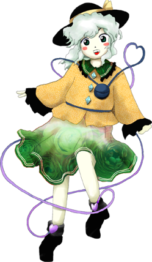
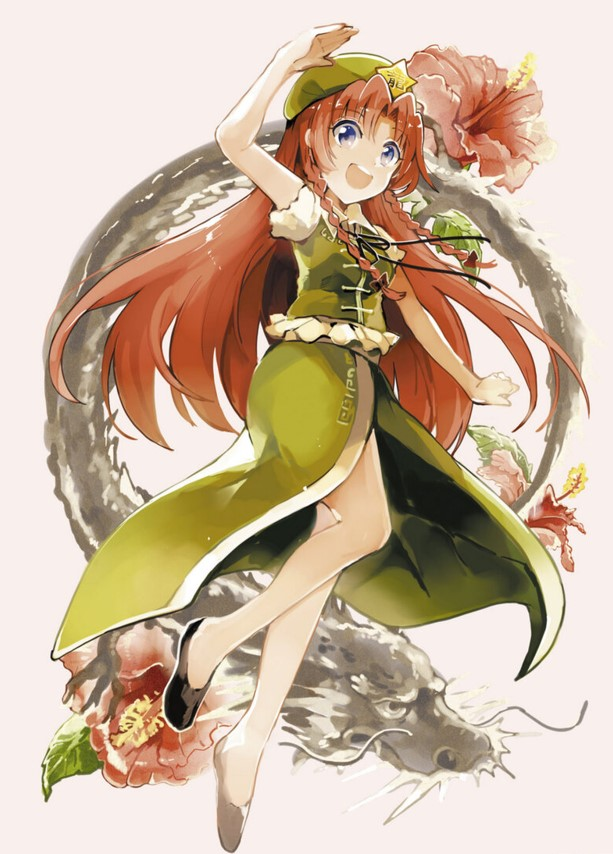

以下我將介紹本次2023年東方人氣音樂投票結果的前5名
如果你看到超過五名，那就也是我夾帶私心w
第一名：U.N.オーエンは彼女なのか？

譯名：UNOWEN就是她嗎？
芙蘭朵露‧斯卡蕾特的主題曲。
這次的是最喜歡的。這是挑戰如何才能
把惡魔少女做成東洋風，同時又要表現出神秘的結果。
這蘿莉風格的旋律，是至今的作品
最有自我風格的旋律，彈鍵盤很有趣。
【 UNOWEN就是她嗎？】from 東方紅魔鄉for 88P Comp.ZUN
第二名：亡き王女の為のセプテット

譯名：獻給已逝公主的七重奏
蕾米利亞·斯卡蕾特的主題曲。
這就是最後了！想作成這種感覺的曲子。
有些重厚又可怕，那樣的最後不喜歡，又加了些融合爵士風格
和蘿莉氣質………，那樣就和平時一樣了。
這個旋律自己也容易理解，喜歡。
【 獻給已逝公主的七重唱】from 東方紅魔鬼鄉for 88P Comp.ZUN
第三名：ハルトマンの妖怪少女

譯名：哈德曼的妖怪少女
古明地戀的主題曲。
試著表現出令人毛骨悚然的壞掉的少女的感覺。
實際表現出了附帶陰森樣的BOSS的感覺吧。
其實應該適合在鋪滿薔薇的庭院，荊棘看起來很刺痛的場所戰鬥
這次不知為何是在神社呢。
第四名：月まで届け、不死の煙
譯名：飄上月球，不死之煙
藤原妹紅的主題曲。
盡可能壓抑住帥氣、威壓感以及力量感，突顯一種可疑的感覺。
不過話說回來，就算曲子本身不可疑，
角色本身便已非常之可疑了。
EX關的BOSS一直以來均使用了很像以前遊戲的曲子，
不過這次用的是很久以前的遊戲的曲子（喂
第五名：恋色マスタースパーク
譯名：戀色Master Spark
霧雨魔理沙的主題曲。
都到這一步了也就不用說什麼懷念不懷念了。
封魔錄是第２作呢。就是那麼古老的曲子的改編曲。
當初一直在想，現在的魔理沙再用這首音樂會不會有違和感，
結果一點違和感也沒有，真驚人。如此恆定不變的人很少見。
她的主題曲雖然有５首但這首是不是最像她的。
第二十四名：明治十七年の上海アリス

譯名：明治十七年的上海愛麗絲
紅美鈴的主題曲。
歐羅巴的味道和遊戲音樂的味道混合了。（2:8左右）
不是中華也不是其他什麼因為那個。是因為要上海法租界的印象。
不過，美鈴也好像不是人類，是什麼東西呢（喂
【 明治十七年的上海愛麗絲】from 東方紅魔鄉for 88P Comp.ZUN。
第十三名：砕月
譯名：碎月
想要氣氛熱烈的偽和風的對話曲。
只由容易理解的高潮似的旋律而構成。
雖然是在最終面的對話使用，但總覺得和後面緊接著的曲子接不上。
第十五名：おてんば恋娘
譯名：活潑的純情小姑娘
琪露諾的主題曲。
果然，作成了有些笨的少女的印象。
也因為這樣變成了不知道是明快還是陰暗的曲子也沒什麼關係。
高速寧靜的主旋律之類的。
算了，反正是第二關（哦
【 活潑的純情小姑娘】from 東方紅魔鄉for 88Pro Comp.ZUN